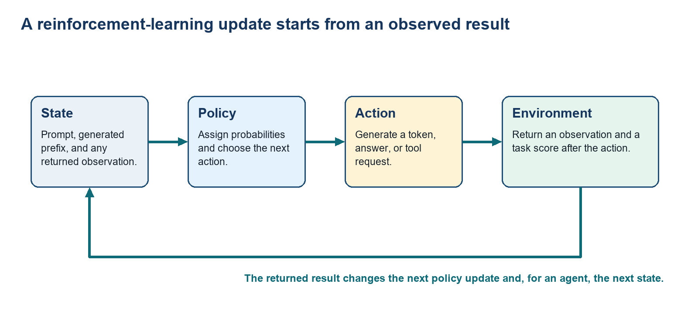

1 SFT for task responses
A pre-trained model can produce plausible text without consistently following a task’s format or constraints. Supervised fine-tuning (SFT) uses trusted prompt-response examples to make those demonstrated responses more likely. This chapter traces one example from text to token probabilities and a supervised update, then separates what imitation teaches from questions that require other evidence.
Pre-trained language model: A model trained to predict the next token in internet-scale text. It has broad linguistic and factual capability, but it does not yet have task-specific evidence about which valid response best serves a user.
Supervised Fine-Tuning (SFT): Training that continues from the pre-trained model using trusted prompt-response examples. It increases the probability of the demonstrated response and teaches formats, tones, and skills shown in those examples.
Post-training changes how that same model responds to prompts used in deployment. SFT, preference optimization, and online reinforcement learning use different evidence; they are not compulsory stages in one training chain.
1.1 From pre-training to task behavior
The starting model already knows many language patterns, while SFT supplies trusted task examples. The useful distinction is the evidence each method adds. A project may stop after SFT, use preference training without later PPO, or use online rewards when newly generated attempts must be scored.
A pre-trained model may know many facts and still answer an instruction in the wrong format, overlook the user’s constraint, or choose a plausible but inferior response. Post-training begins from that capable baseline and supplies evidence about what a good answer should look like for a particular use. It changes behavior; it is not a substitute for learning the underlying language and world regularities during pre-training.
The following methods answer different training questions.
Pre-training: Next-token likelihood builds language, world regularities, and broad skills, but gives no task-specific notion of helpfulness.
SFT: One target completion per prompt teaches instruction format, tone, and demonstrated skills, but treats that one sample as the only target.
Preference optimization: A chosen-versus-rejected pair teaches relative quality and alignment, but the quality signal is only as good as the comparison or reward behind it.
RL for reasoning and agents: A learned, human, or verifier reward can shape multi-step behavior toward an outcome, but reward design can distort the behavior it reinforces.
The available evidence determines which method fits the task.
Demonstrations: Use SFT when one clear answer is enough to teach the missing behavior.
Comparisons: Add preference evidence when the important distinction is which of two acceptable-looking answers is better.
Online rewards: Use online rewards when the current policy must generate new attempts and a scorer can evaluate them reliably.
Richer feedback requires different stored values, numerical objectives, and software components.
1.2 Computing probabilities for text
The LLM policy \(\pi_\theta\) is the complete next-token decision rule, while \(\pi_\theta(y\mid x)\) is the probability it assigns to one exact answer. To connect the model’s weights to the number used in training, hold the prompt and current text prefix fixed, normalize the model’s raw scores into a next-token distribution, select the probability of the recorded token, and combine those selected values into one answer score.
- LLM policy \(\pi_\theta\): The symbol \(\pi_\theta\) names the LLM’s complete decision rule, with \(\theta\) denoting its trainable weights. For one text state \(s_t\), \(\pi_\theta(\cdot\mid s_t)\) is the full next-token probability distribution returned by that rule. Selecting candidate token \(a_t\) gives the scalar \(\pi_\theta(a_t\mid s_t)\). Repeating the calculation for every recorded answer token and multiplying the selected values gives \(\pi_\theta(y\mid x)\) for one exact answer \(y\) after prompt \(x\).
The policy is the complete rule; a policy probability is one output of that rule. The numerical calculation begins by fixing exactly what text the LLM can see before it chooses the next token.
- Current text state \(s_t\): The prompt \(x\) plus the answer tokens already present before token step \(t\). The state is the complete text input used for the next-token calculation at that step.
A forward pass applies the model weights \(\theta\) to this fixed state and returns one raw score for every vocabulary token. These raw scores are logits; they do not yet sum to one and are not probabilities.
Softmax: At token step \(t\), the model returns a logit vector \(z_t\) with one raw score for every vocabulary token. Softmax exponentiates and normalizes that vector into non-negative next-token probabilities that sum to one. Training then selects the probability assigned to the recorded token.
Policy output \(\pi_\theta(\cdot\mid s_t)\): The complete probability vector produced after softmax for state \(s_t\). The dot represents every candidate token in the vocabulary. Selecting the entry for candidate token \(a_t\) gives \(\pi_\theta(a_t\mid s_t)\), one scalar probability between zero and one rather than the policy itself.
The calculation therefore separates the model weights, the full distribution they produce, and the one value used to score a token. Repeating it at the recorded answer positions supplies the factors used to calculate \(\pi_\theta(y\mid x)\). The vertical bar means “given.”
\[ \pi_{\theta}(a_t \mid s_t) = \frac{\exp(z_t[a_t])}{\sum_{j\in V}\exp(z_t[j])} \tag{1.1}\]
Variables
- \(\pi_\theta(a_t\mid s_t)\): Scalar probability assigned to candidate token \(a_t\) in state \(s_t\).
- \(\theta\): All LLM weights used by the forward pass; post-training changes some or all of these numerical parameters.
- \(t\): Index of the current answer position.
- \(s_t\): Prompt plus the response prefix already present at token step \(t\).
- \(a_t\): Candidate next token being selected or scored.
- \(\pi_\theta(\cdot\mid s_t)\): Complete normalized probability vector returned for state \(s_t\).
- \(z_t\): Logit vector returned by the model for state \(s_t\).
- \(z_t[a_t]\): Raw logit assigned to candidate token \(a_t\).
- \(V\): Set of all token IDs in the model vocabulary.
- \(j\): One vocabulary-token index in the denominator.
- \(\exp\): Base-\(e\) exponential applied to a logit before normalization.
Mechanism: Exponentiation makes each logit contribution positive; the denominator sums those values; division returns the selected token’s normalized share. Interpretation: Calculate one next-token probability between zero and one, with all vocabulary-token probabilities summing to one.
Example: softmax turns logits into a token probability
At one fixed prompt and response prefix, a toy model has token IDs 0, 1, and 2 with logits 2, 1, and 0 in that order.
Inputs and measurement
One policy forward pass returns one raw logit for every token in this three-token toy vocabulary. Softmax exponentiates and normalizes all three values; the trainer then reads the share assigned to token ID 0.
Calculation
- Calculation: \(\pi_\theta(a_t=0\mid s_t)=e^2/(e^2+e^1+e^0)=0.665\).
Interpretation: Token ID 0 receives probability 0.665, or 66.5 percent of the probability mass. The other token probabilities are approximately 0.245 and 0.090, so the three values sum to one. Generation can sample from them, while training can score a recorded token without sampling.
- Nat: The unit used for information quantities calculated with the natural logarithm \(\ln\). Using logarithm base 2 gives bits instead. A log probability and its negative-log loss have opposite signs, even though both use the same logarithm.
Applying \(\ln\) changes the numerical representation; it does not replace the original probability. For \(p=0.5\), the probability remains 0.5, its log-probability is \(-0.693\), and the corresponding negative-log loss is \(0.693\).
\[ p = 0.5, \ln p = -0.693, -\ln p = 0.693 \tag{1.2}\]
Because \(\ln\) is used, the two logarithmic values may be described as \(-0.693\) nats and \(0.693\) nats. A log-probability is at most zero and moves closer to zero as the text becomes more likely. Its negative is the non-negative value commonly used in training losses.
- Teacher-forced scoring: A controlled scoring pass for a fixed prompt and written answer. The recorded answer tokens are supplied to the model; no replacement answer is sampled.
A full-answer probability is one score derived from the policy, not a second policy. For fixed prompt \(x\) and complete answer \(y\), teacher forcing supplies the recorded answer rather than sampling a replacement. A causal model reads the prompt and shifted answer prefix; the logit row before each recorded token scores that token. One forward pass normally returns all of those rows at once. Multiplying the selected probabilities gives \(\pi_\theta(y\mid x)\), while summing their logarithms gives the stable answer score used in training. Here \(y\) includes the model’s end or stop token, so the result is the probability of the complete sequence. If the stop token is omitted, the product describes only the recorded prefix.
\[ \pi_{\theta}(y \mid x) = \prod_{t=1}^{T}\pi_{\theta}(y_t \mid x, y_{<t}) \tag{1.3}\]
Variables
- \(\pi_\theta(y\mid x)\): Scalar probability assigned to the exact complete answer \(y\) after prompt \(x\).
- \(\pi_\theta\): The same next-token policy, evaluated at every answer position.
- \(\theta\): LLM weight values held fixed while this answer is scored.
- \(x\): Prompt held fixed while the answer is scored.
- \(y\): Complete written answer.
- \(t\): Answer-position index from 1 through \(T\).
- \(y_t\): Answer token at position \(t\).
- \(y_{<t}\): Answer prefix before token \(t\).
- \(T\): Number of tokens in \(y\).
Mechanism: Each factor is the probability of the recorded next token given the prompt and earlier recorded answer tokens; the product chains all \(T\) decisions. Interpretation: Calculate the probability of producing that exact token sequence. Longer answers usually have smaller raw products, so comparisons use summed log-probabilities. Scale: The product is a probability. Applying the natural logarithm produces a log score reported in nats.
Example: token probabilities become one answer score
A fixed three-token answer receives next-token probabilities 0.50, 0.40, and 0.20 under one policy.
Inputs and measurement
Teacher forcing runs the recorded answer through the model, applies softmax at each position, and gathers the probability of each recorded token ID.
Calculation
- Completion probability and log score: \(0.50\times0.40\times0.20=0.040\); \(\ln(0.040)=-3.219\).
Interpretation: The recorded three-token sequence has probability 0.040, or 4 percent under this toy policy, and log-probability −3.219 nats. DPO repeats this token aggregation for each saved answer under both current and reference policies.
A full-answer score follows five ordered operations.
Tokenize: Convert the fixed prompt and answer into token IDs using the model’s tokenizer and chat template.
Run the model: Produce a vocabulary-logit vector at every recorded answer position.
Normalize: Apply log-softmax so every vocabulary entry becomes a next-token log probability.
Gather: Select the log probability assigned to each recorded next-token ID.
Aggregate: Sum the gathered answer-token values to obtain \(\log\pi_\theta(y\mid x)\).
The token trace maps to four reinforcement-learning objects.
State: Prompt, prior generated tokens, relevant conversation history, and in agentic systems tool observations.
Action: Usually the next token; at a higher level it can be a full completion, tool call, or structured decision.
Reward: A scalar score from human preferences, a learned reward model, or a verifiable outcome such as unit tests.
Policy: \(\pi_\theta\), the complete LLM decision rule introduced earlier; at each state it returns a next-token distribution, and post-training changes \(\theta\) so preferred actions become more likely.
The generic reinforcement-learning loop has one key difference from supervised learning: feedback arrives from an environment after an action, rather than from a fixed target sequence.

For an LLM, feedback may come from a human-preference dataset, a learned reward model, a unit-test runner, or a tool-using task environment. The application samples or selects the next action from the policy distribution, records the result, and supplies the training signal used by the chosen update method.
1.3 Training on demonstrated answers
The policy calculation can score any fixed answer token by token. SFT now needs to turn a trusted recorded answer into a loss while preventing prompt text and role markers from becoming training targets. Prepare the recorded conversation first, identify the assistant response positions, and then calculate the loss only on those positions.
- Response-only masking prepares token targets: The conversation supplies context, but normally only assistant response tokens are training targets. The chat template converts role-structured messages into the exact text and special tokens seen by the model; response-only masking then sets prompt and role-marker positions to −100 so PyTorch cross-entropy ignores them. If every token is left as a target, the model is trained to reproduce the user prompt and template markers instead of learning only the demonstrated answer.
Four software components carry the demonstrated answer into the update.
datasets: Store role-structured conversations and keep training prompts separate from held-out prompts.transformers: Apply the checkpoint’s chat template, tokenize the text, and run the causal language model.TRL
SFTTrainer: Batch examples and calculate the supervised token loss using the prepared response labels.peft: Optionally limit the update to LoRA adapters instead of changing every base-model parameter.
Code 1.1. SFT preprocessing creates response-only training labels. This is an abbreviated preprocessing excerpt, not a runnable program. Its inputs are one record and a tokenizer with the checkpoint’s chat template; its output is batch, whose labels tensor has the same shape as input_ids. The template-specific find_assistant_start helper is intentionally not defined here: production code must replace it with a tokenizer-provided assistant mask or a helper verified for the exact chat template.
record = {
"messages": [
{"role": "user", "content": "Explain why a test failed."},
{"role": "assistant", "content": "Read the first failing assertion."},
]
}
text = tokenizer.apply_chat_template(
record["messages"], tokenize=False, add_generation_prompt=False
)
batch = tokenizer(text, return_tensors="pt", truncation=True)
# The assistant marker identifies where the response tokens begin.
# SINGLE-TURN ONLY: multi-turn code must mask every non-assistant span.
assistant_start = find_assistant_start(batch, tokenizer)
labels = batch["input_ids"].clone()
labels[:, :assistant_start] = -100 # context: ignore in loss
batch["labels"] = labels # response token IDs remain targetsrecord holds the role-structured text, apply_chat_template serializes the roles, and batch["input_ids"] is the token sequence consumed by the causal model. The expected invariant is that every context label before assistant_start equals -100, while assistant-token labels equal their corresponding token IDs. The excerpt prints nothing and does not perform an optimizer step. Multi-turn code must identify every assistant span and retain an assistant termination token when it is part of the desired response.
The SFT objective converts one recorded answer into token-by-token training pressure. It rewards the model for assigning high probability to each demonstrated next token, so it teaches imitation before comparison or outcome quality.
\[ L_{\mathrm{SFT}} = -\frac{1}{|M|}\sum_{t\in M}\log\pi_{\theta}(y_t \mid x, y_{<t}) \tag{1.4}\]
Variables
- \(L_{\mathrm{SFT}}\): Mean supervised loss minimized during SFT.
- \(M\): Assistant-response positions retained by the response mask.
- \(|M|\): Number of target response tokens.
- \(y_t\) and \(y_{<t}\): Demonstrated token at \(t\) and its earlier demonstrated prefix.
- \(\pi_\theta\): Trainable next-token policy.
Mechanism: The condition \(t\in M\) excludes tokens outside assistant spans; an assistant termination token remains a target when it is part of the desired response. The sum adds negative log-probability for each retained token, and division by \(|M|\) gives a mean. Interpretation: Increase probability of the recorded continuation. The equation cannot rank a second plausible whole answer by itself. Scale: Because the loss uses the natural logarithm and averages over target positions, report it in nats per target token. Limit: If \(|M|=0\) because truncation or a malformed template leaves no assistant tokens, the mean is undefined. Filter that record or batch before calculating the loss.
Example: SFT token-loss arithmetic
A recorded answer contains three target token positions. The policy currently assigns the recorded IDs probabilities 0.80, 0.50, and 0.25 at those positions.
Inputs and measurement
The tokenizer supplies the known target IDs. One policy forward pass returns logits at every target position; log-softmax and gather return the selected-token log probabilities. Exponentiation gives the three probabilities used here.
Calculation
- Calculation: \(-\log(0.80)=0.223\); \(-\log(0.50)=0.693\); \(-\log(0.25)=1.386\); mean loss \(=(0.223+0.693+1.386)/3=0.767\) nats per target token.
Interpretation: The least likely third target token contributes the largest loss. Gradient descent therefore applies the strongest local pressure to raise that token’s probability on similar contexts.
Imitation, not ranking: The loss is a supervised correction signal attached to the exact demonstrated token sequence, not a quality score for free-form answers. If two answers are both acceptable but only one appears in the dataset, SFT receives no direct evidence that the other should be ranked below it. Preference evidence adds that comparison through a direct preference objective.
Preference evidence: Suppose a prompt asks for a Python function. An SFT example may demonstrate one correct implementation. A preference pair can additionally identify that a second response is preferred because it validates input, has the requested signature, and explains complexity. SFT raises probability for the demonstration; preference optimization raises the relative probability of the chosen answer over the rejected answer. The pair therefore identifies which answer better satisfies the requested constraints.
SFT is a good fit when trusted demonstrations directly show the required response format and behavior. It raises the probability of those demonstrated assistant tokens, but it does not rank alternative answers or score newly generated attempts. The resulting checkpoint can be deployed as-is or used as the reference or starting policy for another method when the task has additional feedback.